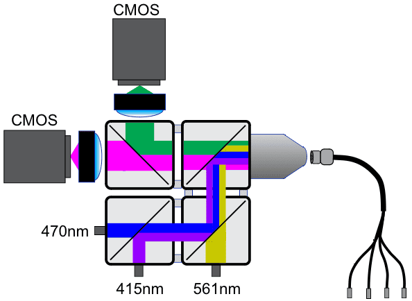

Fiber Photometry System Configuration#


For FIP photometry data acquisition and hardware control.
Overview#
The FIP (Frame-projected Independent Photometry) system is a low-cost, scalable photometry setup designed for chronic recording of optical signals from behaving mice during daily training. The system is based on a modified design of Frame-projected Independent Photometry (Kim et al., 2016), using inexpensive, commercially available, off-the-shelf components.

For more information, see the AIND Fiber Photometry Platform Page and the following protocols:
Wavelength Information#
The table below summarizes the photometry system's optical configuration, showing the relationship between emission channels and their corresponding excitation sources.
| Excitation | Emission | |||||
|---|---|---|---|---|---|---|
| Name | Wavelength (nm) | Led Name | name | Wavelength (nm) | Detector Name | |
| Yellow | 565 | 565 nm LED | Red | ~590 (peak) | Red CMOS | |
| Blue | 470 | 470 nm LED | Green | ~510 (peak) | Green CMOS | |
| UV | 415 | 415 nm LED | Isosbestic | 490-540 (passband) | Green CMOS |
Signal Detection#
- Green Channel: Primarily used for green GFP based indicators
- Red Channel: Primarily used for RFP-based indicators (e.g., RdLight)
- Isosbestic Channel: Used as a control measurement; shares same emission path as green but with different excitation
The system uses dedicated CMOS cameras for the red and green emissions, with the isosbestic signal being captured by the green camera under different excitation conditions.
Temporal Multiplexing#
The system employs temporal multiplexing to acquire signals from multiple fluorescent indicators through the same optical fiber. This is achieved by rapidly cycling through different excitation wavelengths while synchronizing camera acquisitions:
--->| |<--- period = 16.67 ms
Blue LED(470) ████░░░░░░░░░░░████░░░░░░░░░░░████░░░░░░░░░░░████░░░░░░░░░░░████░░░░░░░░░░░
UV LED (415) ░░░░░████░░░░░░░░░░░████░░░░░░░░░░░████░░░░░░░░░░░████░░░░░░░░░░░████░░░░░░
Yellow LED (560)░░░░░░░░░░████░░░░░░░░░░░████░░░░░░░░░░░████░░░░░░░░░░░████░░░░░░░░░░░████░
Green CMOS ████░████░░░░░░████░████░░░░░░████░████░░░░░░████░████░░░░░░████░████░░░░░░ (captures 470/415)
Red CMOS ░░░░░░░░░░████░░░░░░░░░░░████░░░░░░░░░░░████░░░░░░░░░░░████░░░░░░░░░░░████░ (captures 560)
───────────────────────────────────────────────────────────────────────────►
Time
The temporal multiplexing sequence:
- Blue LED (470nm) excitation -> Green CMOS camera captures signal from GFP-based sensors
- UV LED (415nm) excitation -> Green CMOS camera captures isosbestic signal
- Yellow LED (560nm) excitation -> Red CMOS camera captures signal from RFP-based sensors
This cycling occurs at 60 Hz, allowing near-simultaneous measurement of multiple signals while preventing crosstalk between channels. Each LED is activated in sequence and cameras are synchronized to capture data only during their respective LED's ON period.
Using the acquisition system#
See wiki for AIND internal installation instructions.
Pre-requisites (some of these are optional, but recommended for a smoother experience)#
- Visual Studio Code (highly recommended for editing code scripts and git commits)
- Git for Windows (highly recommended for cloning and manipulating this repository)
- .NET Framework 4.7.2 Developer Pack (required for intellisense when editing code scripts)
- Visual C++ Redistributable for Visual Studio 2012 (native dependency for OpenCV)
- Spinnaker SDK 1.29.0.5 (device drivers for FLIR cameras)
- On FLIR website:
Download > archive > 1.29.0.5 > SpinnakerSDK_FULL_1.29.0.5_x64.exe - (Optional) UV Python environment manager (highly recommended for managing the Python environment for this project. All examples will assume usage of
uv. Alternatively, you can use other environment managers such asvenvorcondato create a Python environment and install the required dependencies listed in the package metadata:pyproject.toml)
Installation Steps#
- Clone this repository
- Create the environments for Bonsai, run
./.bonsai/setup.cmd(can be by double-clickin it too). This is required to run experiments using the Bonsai script in an experimental PC. - [Optional] Create the environments for Python, run
uv venvif using uv, or create a virtual environment using your preferred method. This is only used to run the Python script generating configuration files. (rig PCs can inherit those files from somewhere else) - Alternatively, if you are using uv, run
./scripts/deploy.ps1to bootstrap a Python and Bonsai environment at the same time for the project automatically.
Generating input configurations [Optional]#
The current pipeline relies on two input configuration files. These configure the rig/instruments and session parameters, respectively. These files are formalized as pydantic models as shown in ./examples/examples.py. Template configuration files are included in the ./examples/ folder, and running the examples.py will create configuration files into ./local/
Briefly:
from aind_behavior_services.session import Session
from aind_physiology_fip.rig import AindPhysioFipRig
this_rig = AindPhysioFipRig(...)
this_session = Session(...)
for model in [this_session, this_rig]:
with open(model.__class__.__name__ + ".json", "w", encoding="utf-8") as f:
f.write(model.model_dump_json(indent=2))
Running the acquisition#
Running manually#
Acquisition is done through Bonsai via a single entry-point workflow. As any Bonsai workflow, one can run the acquisition workflow via the editor:
- Open Bonsai from the bootstrapped environment in
./.bonsai/bonsai.exe - Open the workflow file
./src/main.bonsai - Manually set the two highest level properties
RigPathandSessionPathto the paths of the configuration files generated in the previous step. - Launch the workflow by clicking the "Run" button in the Bonsai editor.
- Settings in FipRig.json such as
camera_green_isoserial_numberandcuttlefish_fipport_nameneeds to be modified per PC for Bonsai to detect those hardware.
[!Important]
Session.allow_dirtyproperty will be checked at the start of the workflow. If set toFalsethe workflow will immediately throw an error and stop execution if the repository has uncommitted changes. If the user intends to run the workflow with a dirty repository, they should set this property toTruein the session configuration file.
Running via CLI#
The workflow can be launched via the Bonsai Command Line Interface (CLI). Additional documentation on the CLI can be found here. To run the acquisition workflow using the CLI, use the following command:
"./.bonsai/bonsai.exe" "./src/main.bonsai" -p RigPath="../path/to/rig.json" -p SessionPath="../path/to/session.json"
[!Note] The paths to the configuration file are relative to the workflow working directory (i.e.
./src/)
Additional flags can be passed to automatically start the workflow (--start) or run in headless mode (--no-editor) as stated in the Bonsai CLI documentation.
Acquiring data#
Once the workflow is running, a UI will pop up and users can start acquisition by clicking Start. The system will then begin to acquire data from the cameras and store it in the specified session directory. Once the session is ready to stop, users can click Stop in the UI. The system will then save the session data and stop/close the workflow.
Contributors#
Contributions to this repository are welcome! However, please ensure that your code adheres to the recommended DevOps practices below:
Linting#
We use ruff as our primary linting tool:.
uv run ruff format .
uv run ruff check .
Testing#
Attempt to add tests when new features are added.
To run the currently available tests, run uv run python -m unittest from the root of the repository.
Lock files#
We use uv to manage our lock files and therefore encourage everyone to use uv as a package manager as well.
CLI#
The package provides a command line interface (CLI) to facilitate common tasks. The CLI can be accessed by running the following command from the root of the repository:
uv run fip <subcommand> [options]
For a list of available subcommands and options, run:
uv run fip --help
(If you are not using uv, activate your python environment and run the fip tool directly.)
Generating aind-data-schema metadata#
The repository will maintain tools to generate aind-data-schema compliant metadata for experiments run using the IsoForce task:
- Install the
mappersoptional dependencies:
uv sync --extra mappers
- Run the metadata generation tool via the command line and provide the necessary arguments
uv run fip data-mapper -h
Alternatively, you can use the mapping classes directly. For instance to run the mapper/extractor for acquisition data:
from aind_physiology_fip.data_mappers import ProtoAcquisitionMapper
data_path = "path to dataset"
acquisition_mapped = ProtoAcquisitionMapper(data_path).map()
with open("fip.json", "w", encoding="utf-8") as f:
f.write(acquisition_mapped.model_dump_json(indent=2))
Regenerating schemas#
Instructions for regenerating schemas can be found here.